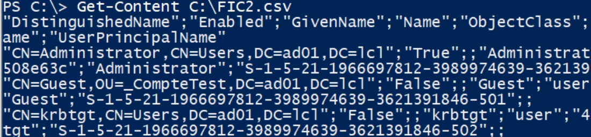
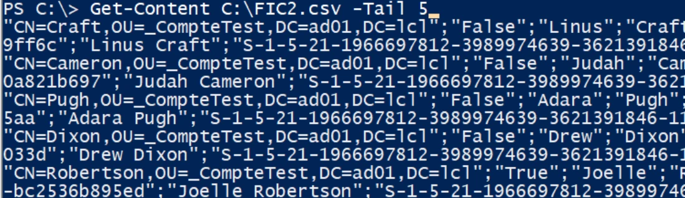

Transcription du support du Drive. Les formulations historiques et les exemples du document sont conservés. Les valeurs d’accès du laboratoire sont indiquées comme « fourni par le formateur ». Les adresses de messagerie personnelles utilisent example.com.
Démonstration 12 du module 3
L’objectif de cette démonstration est de vous présenter la commande Get-Content
Il est possible d’afficher le contenu d’un fichier dans la console PowerShell.
Toutefois, ce n’est possible que sur un fichier au format lisible par la console.
o On utilise la commande Get-Content suivie du chemin du fichier.Les données apparaissent ligne par ligne.
Pour sélectionner certaines lignes, on utilise le paramètre tail puis une valeur pour indiquer le nombre de lignes sélectionnées en fin de fichier.
Get-Content C:\FIC2.csv
Get-Content C:\FIC2.csv -Tail 5
